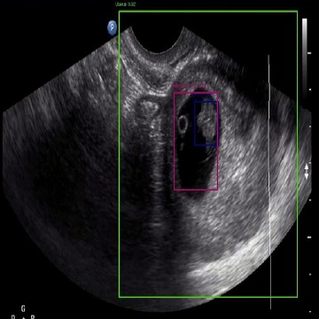
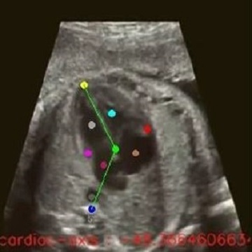
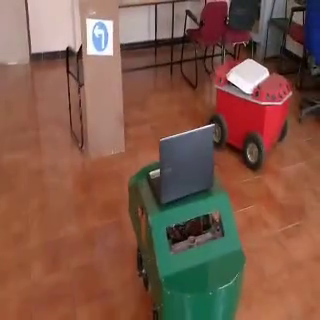
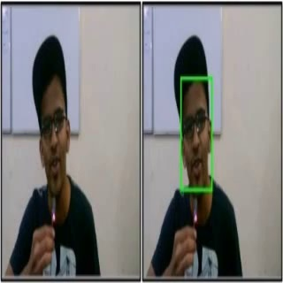

|
I am currently enrolled in the Master's program in Computer Science with a focus on Artificial Intelligence at the University of Southern California. I am working as Postgraduate Researcher at Yale University under Dr. Daniella Meeker and Dr. Hua Xu Previously I worked as
Email / CV / Research Exp / Linkedin / GitHub Research Interests: Computer Vision, Generative AI, Machine Learning, Deep Learning, Natural Language Processing, Reinforcement Learning and Robotics. |
Aug '23 |
Joined Yale University as Postgraduate Researcher under Dr. Daniella Meeker and Dr. Hua Xu |
May '23 |
Joined Amazon Science lab - Buyer Risk Prevention Applied Scientist Intern under Dr. Dmitry Pavlov. |
Apr '22 |
Joined Neuro Image Computing Research Lab under Dr. Yonggang Shi. |
Mar '22 |
Joined Dr. Daniella Meeker's team as a Machine Learning Student Researcher |
Jan '22 |
Started MS in Computer Science - AI at University of Southern California. |
Oct '21 |
Recevied Star Startup Award from Ramaiah Evolute. |
Aug '21 |
Raised funding for AIvolved from Ministry of Electronics & Information Technology and Ramaiah Evolute. |
Nov '19 |
Co-founded AIvolved Technologies Pvt Ltd as CTO and Director. |
Jul '19 |
Presented IEEE paper in ICCCNT-IIT Kanpur. |
Nov '18 |
Published paper in Springer; SAI-Goa. |
Oct '18 |
Presented IEEE paper in I4C-Bangalore. |
Aug '18 |
Joined Philips R&D-Bangalore as a Machine Learning Research Engineer. |
July '18 |
Presented IEEE paper in SAI Computing Conference London-UK. |
July '18 |
Co-hosted ERCICA-2018 International Conference - Bangalore. |
Apr '18 |
Represented South India in DRDO DRUSE Robotics Competition. |
Apr '18 |
Obtained Copyright from Govt. of India for final year thesis. |
Dec '16 |
Placed 2nd among 850 teams in Nokia Innovation Day - Bangalore. |
May '16 |
Joined Centre for Robotics Research - NMIT. |
|
|
January 2022 - December 2023
|
|
|
August 2014 - July 2018
|
|
|
August 2023 - Present
|
|
|
May 2023 - August 2023
|
|
|
August 2018 - December 2021
|
|
|
November 2019 - December 2021
|
|
|
March 2022 - May 2023
|
|
|
May 2018 - October 2019
|
|

|
Soumabha Bhowmick, Giridhar NR, Celine Firtion, Karthik Krishnan, Subhendu Seth, Pallavi Vajinepalli Philips Research Global - OCUPAI 2020 Abstract: Automatic Detection of Intrauterine pregnancy or ectopic along with clincial findings such as Gestational Sac diameter etc. |
|

|
Karthik Krishnan, Giridhar NR, Celine Firtion, Pallavi Vajinepalli Philips Research Global - OCUPAI 2020 Abstract: High quality, high frame rate localization of 12 anatomical keypoints in the Fetal Heart 4 Chamber view and 2 anatomical keypoints in the Femur. |
|
|
Giridhar NR, Aniketh Manjunath, Jharna Majumdar ICCCMLA-Goa, 2020 Springer-Singapore Paper Abstract: A polynomial is modelled to detect soft transitions in a video when converted to texture domain. Keywords: Gray level co-occurence Matrix, Laws Texture, Statistical Method, Gradient Descent, Fade-Dissolve-Wipe Transition. |
|

|
Giridhar NR, Gagan PE, Jharna Majumdar IEEE - IIT Kanpur, 2019 Paper Abstract: Features from corner detectors are extracted and trained on supervised learning techniques to identify road signs. MSER is used to detect ROI and LQR controller is developed for robot navigation. Keywords: Corner Detectors- SIFT, SURF, ORB. Support Vector Machines, Logistic Regression, ANN, Maximally Stable Extremal Regions (MSER), Linear Quadratic Regulator (LQR). |
|

|
Aniketh Manjunath, Giridhar NR, Jharna Majumdar IEEE - SAI Computing Conference, London-United Kingdom, 2018 Paper Abstract: Optical flow for determining shot transitions (Descriptors: SIFT) in a video sequence and human-face expression detection (Descriptors: HOG). Keywords: Scale Invariant Feature Transform, Hough Transform, Optical flow, Skin Segmentation, Histogram of Gradient. |

|
Sudip Chandra Gupta, Giridhar NR, Jharna Majumdar IEEE, 2018 Paper Abstract: A mobile robot is used for tracking in low illumination. A robust Control system is required for the robot to efficiently follow the human using the computer vision (adaptive low illumination) algorithm. Linear Quadratic Integral (LQI) has been implemented on the system for velocity control. Keywords: Low Illumination, Tracking, Particle filter, SSMR, Control System, LQI |